High Moving Costs
Large appliances are expensive to transport, store, or dispose of during a move.
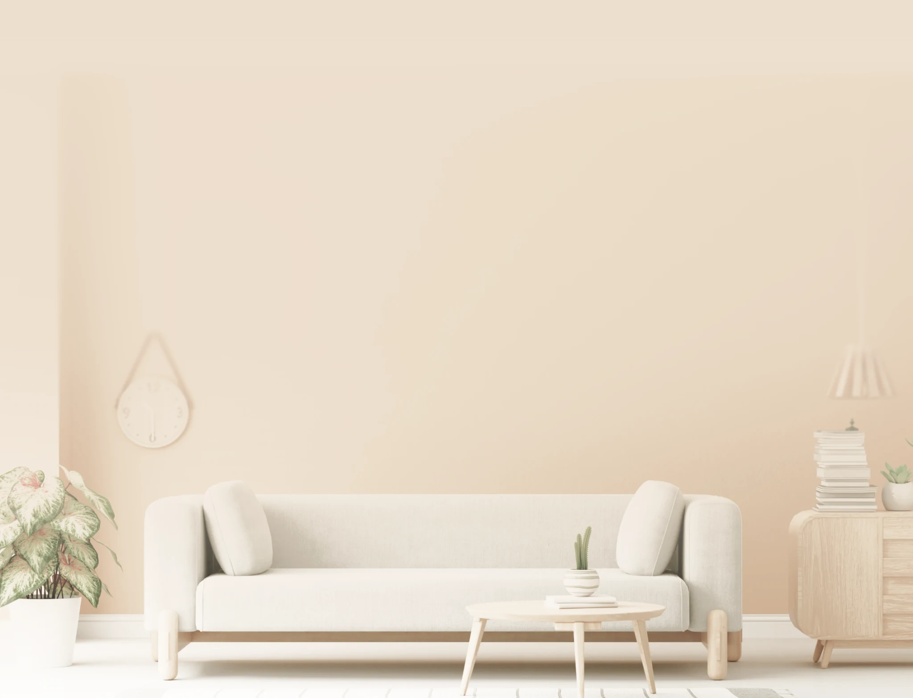
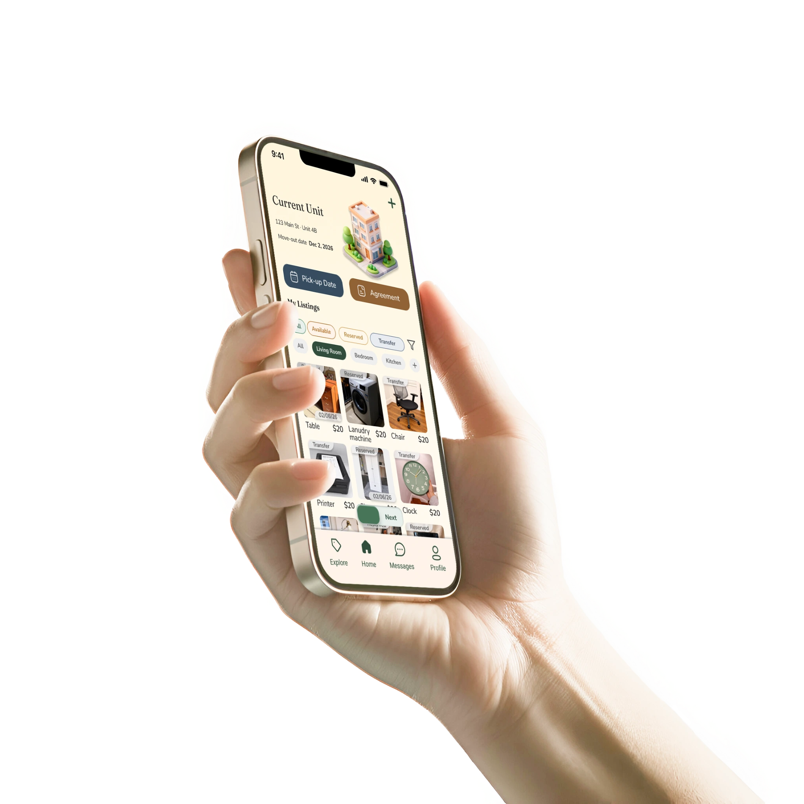
What is Relo
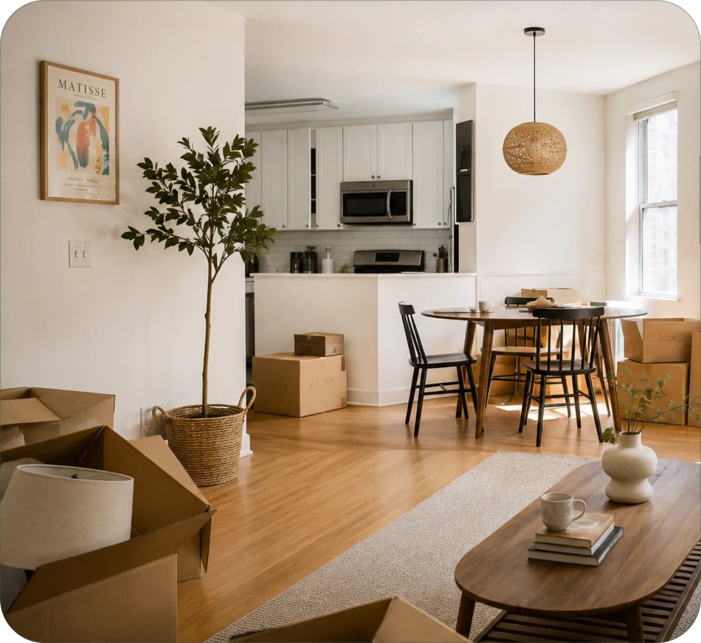
Relo is a platform designed to simplify the transfer of home appliances between tenants. Instead of moving, storing, or discarding appliances, outgoing tenants can transfer them directly to the next resident through a structured process with landlord involvement.
This reduces moving costs and waste while helping incoming residents settle into a new home more affordably. By supporting the entire transition from move-out to move-in, Relo creates a smoother, more sustainable rental experience.
Problem
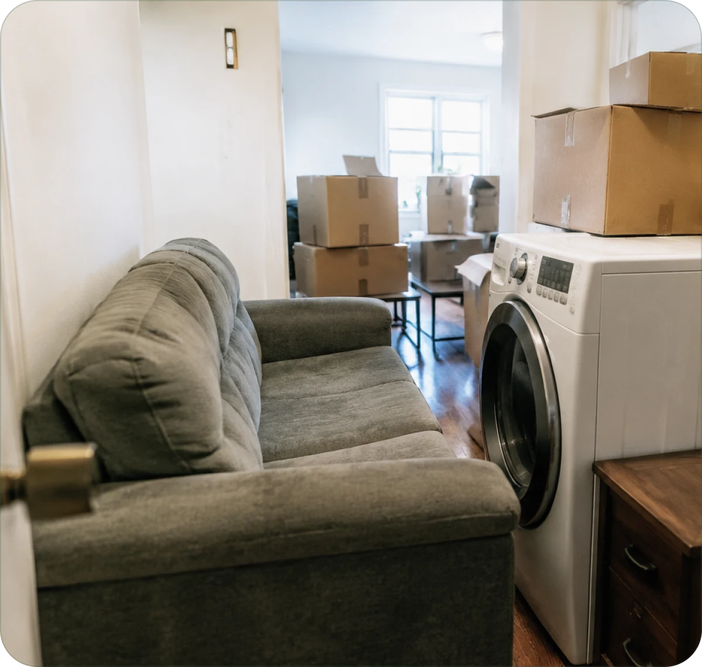
Large appliances are expensive to transport, store, or dispose of during a move.
Outgoing and incoming tenants rarely have an easy way to coordinate appliance transfers.
Many functional appliances are discarded simply because the transfer process is inconvenient.
Research
| Feature | Facebook Marketplace | Xianyu | Mercari | OfferUp |
|---|---|---|---|---|
| Local listings / nearby discovery | — | — | ||
| Secure payment system | — | — | — | |
| Large secondhand marketplace | ||||
| Support for large furniture pickup | — | — | ||
| Furniture handoff coordination | — | — | — | — |
| Time-sensitive move coordination | — | — | — | — |
| Tenant-to-tenant transfer flow | — | — | — | — |
“I'm an international student, and I'll be graduating soon. I'll be moving to another city for graduate school, so I need to pack up everything I've collected over the past few years. I have a lot of furniture and household items, and I hope I can sell them before I move out.”
“I'm moving to San Francisco for a new job and will be sharing an apartment with my roommate. Since we're starting from scratch, we need to buy almost everything for our new place. I just hope we can have the basic essentials ready when we move in, so we don't have to rush around buying everything at once.”
“I own several apartments near a university, so there's always a lot of tenant turnover throughout the year. Every time someone moves out, I need to make sure the unit is cleaned, inspected, and ready for the next tenant as quickly as possible.”
Key insight
While existing resale platforms make buying and selling easy, they don't support the time-sensitive coordination that happens during a rental transition. Outgoing tenants need to clear their homes before moving out, incoming tenants need furniture before moving in, and landlords need the unit to remain organized throughout the process.
Goals
Help outgoing tenants sell or transfer furniture before moving out. Help incoming tenants furnish their homes before moving in. Support landlords in keeping units organized during tenant turnover.
Designing Relo was more than creating a furniture marketplace. The challenge was to support users through different stages of moving while keeping the experience clear and easy to navigate. Users may switch between selling, buying, and browsing throughout the journey, so the interface needed to communicate their current context without requiring them to think about different roles.
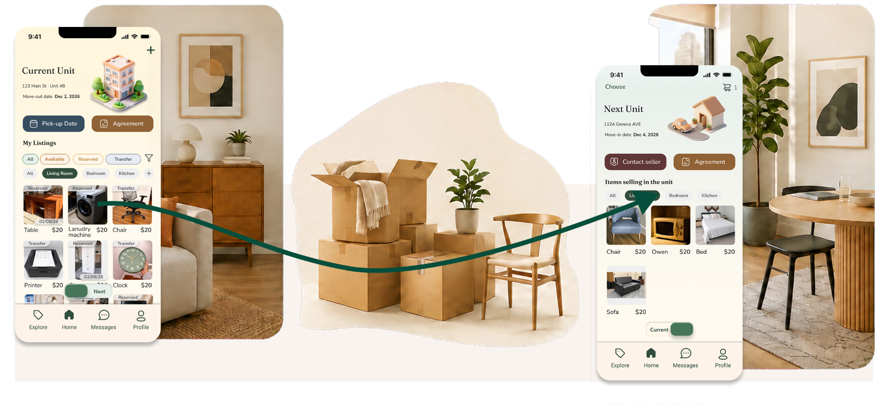
Final solution
Outgoing tenants can list furniture they plan to leave behind, while incoming tenants can reserve items before the move. This reduces unnecessary transportation and gives both parties more certainty during the moving process.
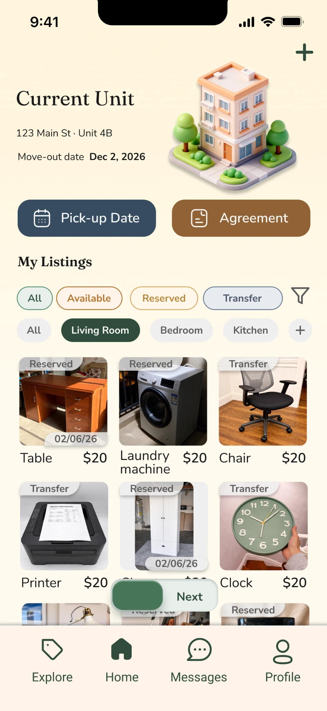
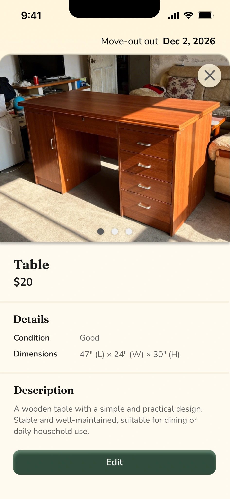
Incoming tenants can browse apartments and preview furniture that may be available before moving in. This helps users understand what is already in the unit and plan what they still need to purchase.
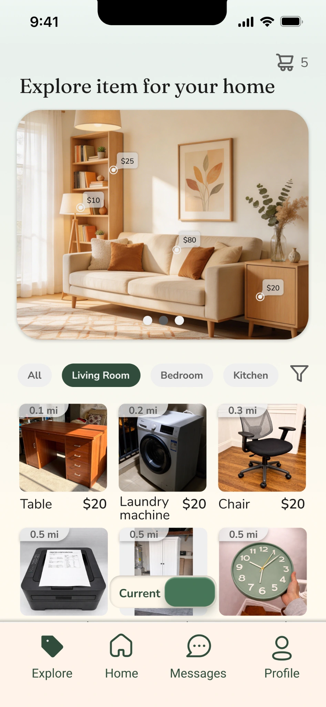
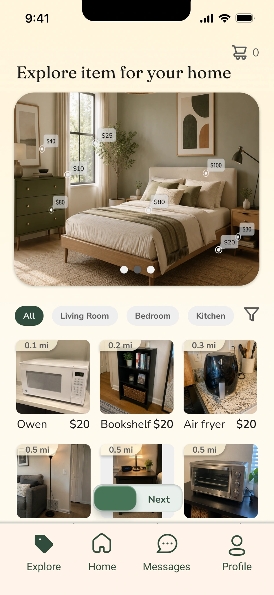
A shared communication flow allows tenants to confirm item availability, arrange handoff details, and track the transfer status. Keeping everything in one place reduces confusion and minimizes last-minute coordination.

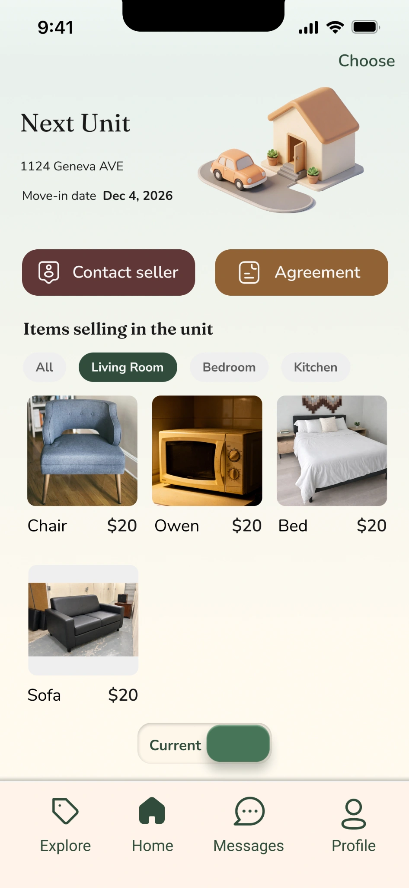
If furniture is not transferred to the next tenant, it can be listed to nearby residents through the marketplace. This gives items another opportunity to be reused instead of being discarded.
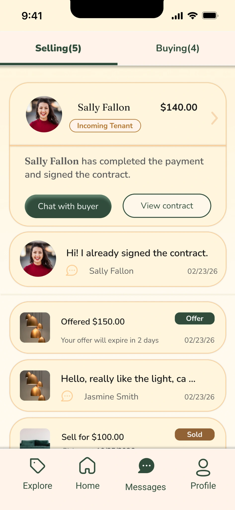
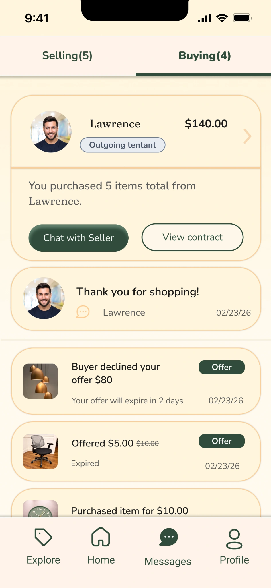
Relo started from a personal experience. My friend transferred their apartment and furniture to me with the property management approval. I realized how transferring furniture and appliances is a lot more convenient than getting rid of it.
At first, I thought the solution might be a simple platform for transferring furniture and appliances. But as I spoke with users and mapped out different moving situations, I found that the bigger challenge was helping people manage everything happening before, during, and after a move.
That realization led to the “current / next” switching system to help users stay oriented as their needs changed throughout the moving process, and shaped the overall structure of the product.
Relo is still a concept, and its success would depend on coordination between tenants, landlords, or property managers. I believe there’s an opportunity to make moving a little easier while reducing unnecessary waste. If the product could help people save time, save money, and give usable furniture a second life, I’d consider that a meaningful outcome.